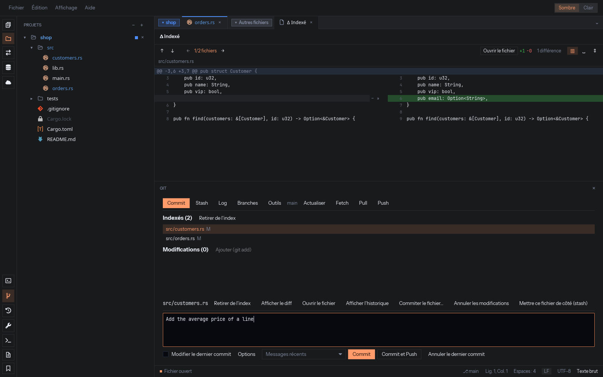
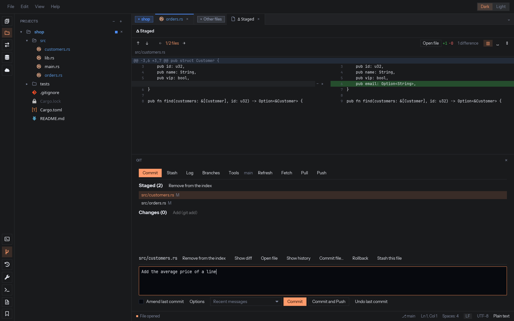
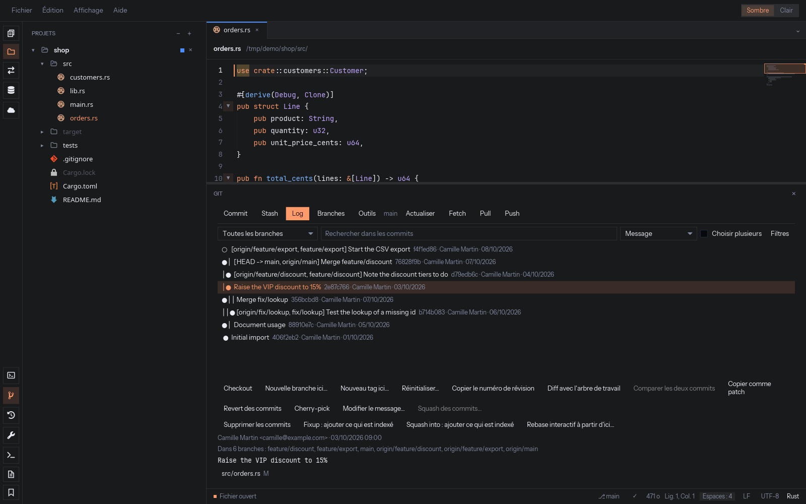
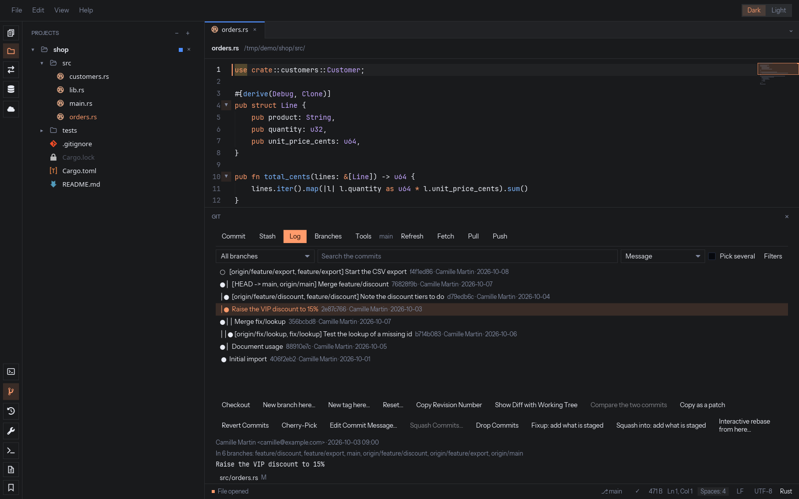
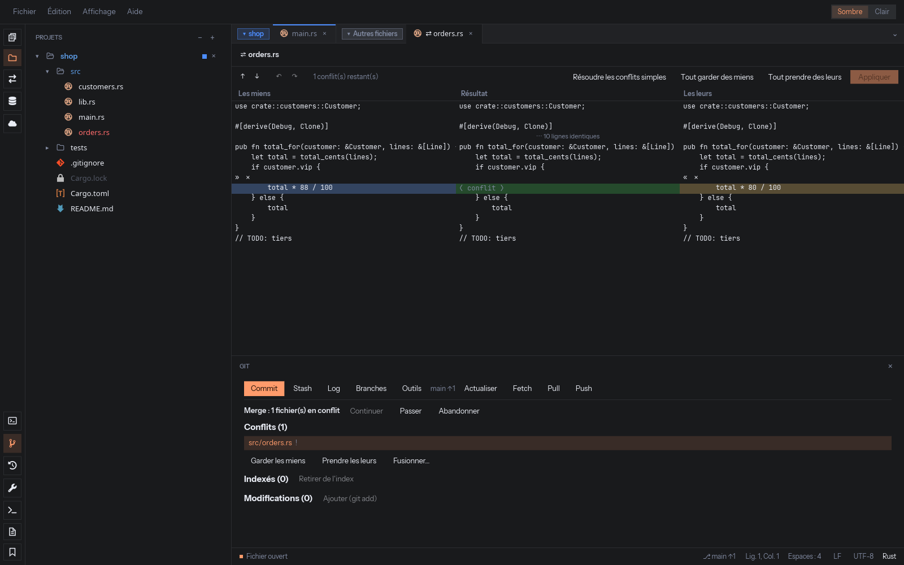
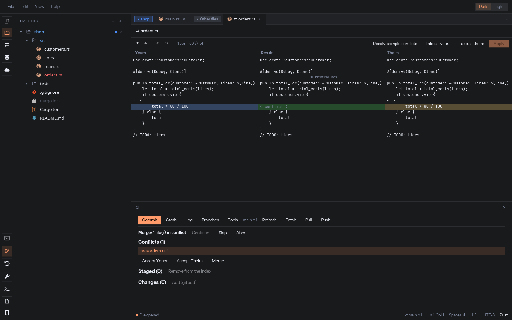

GitGit
Git complet, dans un panneau sous l'éditeur.Full Git, in a panel under the editor.
Parcours complet : modifier un fichier, voir les lignes marquées, indexer, commit et push depuis le panneau.Complete flow: edit a file, see the marked lines, stage, commit and push from the panel.
Vidéo à venirVideo to comePrésentationOverview
Commit, remisage, historique avec son graphe, branches, push et pull, blame, diffs et conflits : tout ce qu'on fait au quotidien avec Git, sans quitter l'éditeur — jusqu'au rebase interactif.
Commit, stash, log with its graph, branches, push and pull, blame, diffs and conflicts: everything you do with Git every day, without leaving the editor — down to the interactive rebase.
CommitCommit
- Fichiers indexés et modifiés : indexer, désindexer, annuler, supprimer, remiser ou ignorer un fichier.Staged and changed files: stage, unstage, roll back, delete, stash or ignore a file.
- Commit avec amend, sign-off, sans les hooks, auteur au choix ; commit et push en un geste ; annuler le dernier commit.Commit with amend, sign-off, skip the hooks, a chosen author; commit and push in one go; undo the last commit.
- Conflits d'un merge, rebase, cherry-pick ou revert : poursuivre, passer ou abandonner.Conflicts of a merge, rebase, cherry-pick or revert: continue, skip or abort.


Panneau Git, onglet Commit : fichiers modifiés, message en cours de saisie, diff d'un fichier ouvert à côté.Git panel, Commit tab: changed files, a message being typed, a file diff open beside it.
Capture à venirScreenshot to comeHistorique (log)Log
- L'historique avec son graphe : branche courante, toutes les branches, une branche ou un tag, le reflog, ou un fichier.History with its graph: current branch, all branches, a branch or tag, the reflog, or a file.
- Recherche par message, auteur, contenu, fichier ou date, avec des filtres.Search by message, author, content, file or date, with filters.
- Sur les commits choisis : checkout, branche, tag, reset, revert, cherry-pick, reword, squash, drop, fixup, rebase interactif, comparer, patch.On picked commits: checkout, branch, tag, reset, revert, cherry-pick, reword, squash, drop, fixup, interactive rebase, compare, patch.


Onglet Log : le graphe d'historique avec plusieurs branches, un commit sélectionné et ses fichiers.Log tab: the history graph with several branches, one commit selected and its files.
Capture à venirScreenshot to comeBranches et remisagesBranches and stashes
- Branches locales et distantes, tags : checkout, merge, rebase, pull, fetch, push, force push, renommer, supprimer, comparer avec l'arbre de travail.Local and remote branches and tags: checkout, merge, rebase, pull, fetch, push, force push, rename, delete, compare with the working tree.
- Remisage (en gardant l'index, ou l'index seul), appliquer, pop, supprimer, créer une branche depuis un remisage.Stash (keeping the index, or the index only), apply, pop, drop, make a branch of a stash.


Résolution d'un conflit dans la vue à trois colonnes.A conflict settled in the three-column merge.
Capture à venirScreenshot to comeDans l'éditeurIn the editor
- Couleurs des fichiers modifiés dans l'arbre et sur les onglets ; lignes modifiées marquées dans la marge.Colors of changed files in the tree and on the tabs; changed lines marked beside the text.
- Blame dans la marge (« Git: Annotate »), diffs en onglets où l'on indexe ou annule des blocs, conflits résolus dans une vue à trois colonnes.Blame in the gutter (“Git: Annotate”), diffs in tabs where blocks are staged or put back, conflicts settled in a three-column merge.
- Branches et commits dans « Rechercher partout » (onglet Plugins) ; outils : comparer/récupérer un fichier d'une révision, historique d'un fichier ou de lignes, remotes, patches, nettoyage, sous-modules, worktrees, clone, et fetch/pull/push de tous les dépôts des projets.Branches and commits in Search Everywhere (Plugins tab); tools: compare with or get from a revision, history of a file or selected lines, remotes, patches, clean, submodules, worktrees, clone, and fetch/pull/push of every repository of the projects.
RaccourcisShortcuts
| TouchesKeys | ActionAction |
|---|---|
| Alt G | Afficher le panneau GitShow the Git panel |
| Ctrl K | CommitCommit |
| Ctrl Shift K | PushPush |
| Ctrl T | PullPull |
| Ctrl Shift B | BranchesBranches |
Tous les raccourcis se changent dans Préférences › Raccourcis (regroupés sous le nom du plugin).
Every shortcut can be changed in Preferences › Shortcuts (grouped under the plugin's name).
Installer et réglerInstall and configure
Ouvrez Fichier › Préférences… › Plugins, cherchez « Git » et cliquez sur Installer.
Open File › Preferences… › Plugins, search for “Git” and click Install.
PrérequisRequirements
gitdoit être installé sur la machine.gitmust be installed on the machine.
RéglagesSettings
Préférences › Plugins : manière de faire les pull et les merges, fréquence du fetch automatique.
Preferences › Plugins: how Pull and merges are made, and how often to fetch.
Code source et licenceSource and license
Dépôt : ardoise-editor/plugin-git · identifiant ardoise.git · version 1.3.0 · licence MIT.
Repository: ardoise-editor/plugin-git · id ardoise.git · version 1.3.0 · MIT license.